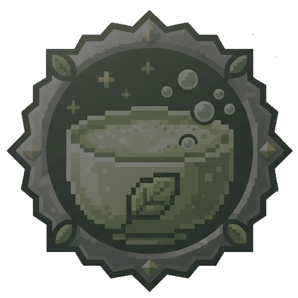

The Advancement Guide
The survival rework teaches you the game through its advancements, but Bedrock can't open that menu. Here is every step, in order, with exactly what the game checks for. Tick steps off as you go.
Spoilers ahead. Java players see these hints in the advancements menu (L); this page also says exactly what completes each step. Your ticks are saved on this device only. Press / to search.
Loading the guide…